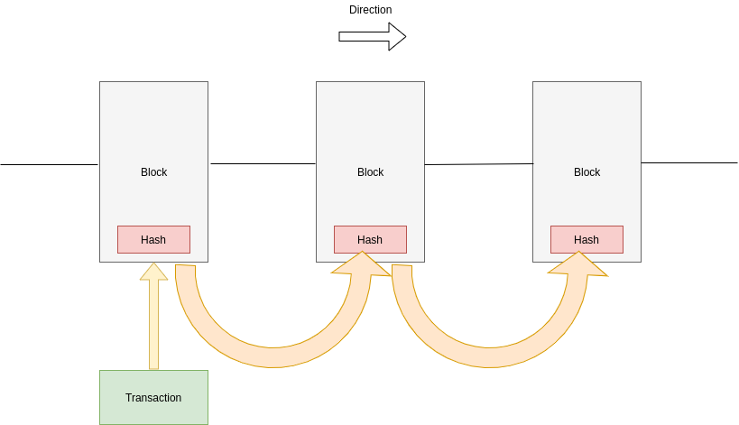
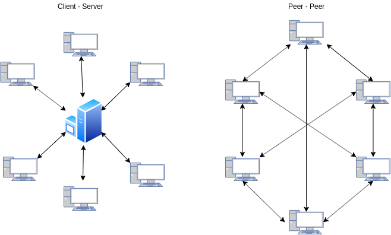
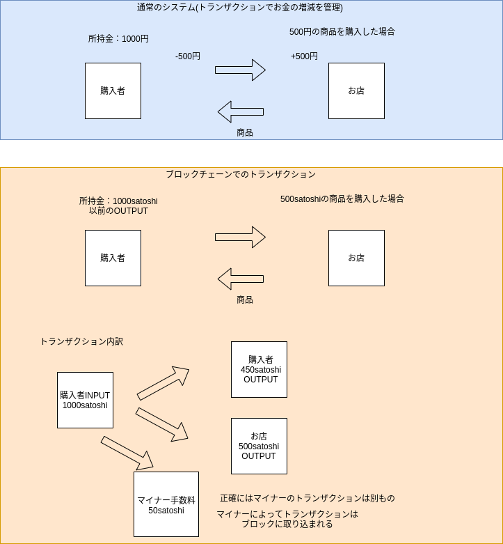
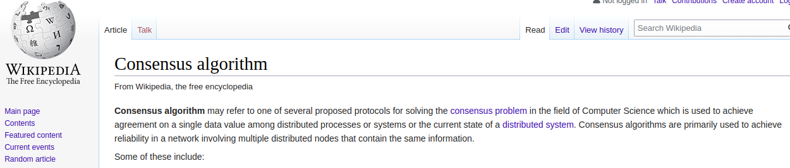

ブロックチェーンについて何もわからない人へ
- 2019/12/01
はじめに (Introduction)¶
- ブロックチェーンについて、勉強していない。
- 実は興味があるけど、難しそう
- これから勉強するつもり
- 最近勉強し始めた
といった方を対象に記事を書きたいと思います。
アジェンダ (Agenda)¶
ブロックチェーンとは？¶
先ずはじめに、昨今話題となっているブロックチェーンと仮想通貨ですが、こちらは別物であると先に定義しておきます。
ブロックチェーン (Blockchain)¶
- 暗号化技術
- P2Pネットワーク
- コンセンサスアルゴリズム
- スマートコントラクト
の大きく4つの柱からなる、新しい考え方のテクノロジーです。
さらに詳細に申し上げますとDLT(Distributed Ledger Technology分散型台帳技術)を利用して取引履歴を改竄不可能にした技術となります。
ブロックチェーンはトランザクションをブロックに取り込み、且つ、ブロックは前のブロックの情報（ハッシュ値）を含むため、改竄不可能にする技術
DLTはP2Pネットワークにより、取引履歴を皆で共有・保管することにより、ネットワークの安全性を担保する仕組み
となります。
ブロックチェーンのブロックは前のブロックの情報（ハッシュ値）を含むについて参考図を下記に示します。 
ハッシュ値はそのブロックのハッシュ値であり、あるブロックを改竄しようとすると、それ以降のブロックのハッシュ値も変更することとなるため、理論的に改竄不可能となっています。
技術的なことは後述しますが、ブロックチェーンのネットワークにも、
- パブリックネット（本番環境）
- プライベートネット
- テストネット（ステージングの環境）
が存在していることは頭の片隅に置いておいてください。
先ずは、ブロックチェーン技術の発展の先駆けとなった、仮想通貨について解説します。
仮想通貨 (Cryptocurrency)¶
Bitcoin(BTC)、Ethereum(ETH)、NEM、Ripple(XRP)のような現在の法定通貨に取って代わるような存在になることを掲げている通貨のことです。
仮想通貨は多くの種類があり、上に挙げた4つは、その中でも代表的なものです。
Bitcoin
最初の仮想通貨であり、Satoshi Nakamotoと名乗る匿名の方が、メーリングリストに挙げた論文を元に構成されたものとなります。
現時点でも、最も多く取引実績のある仮想通貨となります。 通貨の単位はbitcoinまたはsatoshiです。
Ethereum
スマートコントラクトというEthereumブロックチェーンネットワーク上でプログラムを走らせることで、ブロックチェーン上でシステムを構築できることが最大の特徴と言えるでしょう。
また、プログラムを実行する際に、保持しているコインを消費するという特徴もあります。 通貨の単位はetherまたはweiです。
NEM
色々と話題になったNEMですが、NEMはNew Economic Movementの頭文字をとったものとなります。
経済活動の構築を目的とする仮想通貨です。
Rippe(XRP)
Rippeは国際送金のアイディアにブロックチェーンのテクノロジを利用したものとなります。
ブリッジ仮想通貨として用いられ、日本円⇒XRP⇒米ドルのような使われ方が一般的らしいです。
少し脱線しましたが、仮想通貨はそれぞれが掲げている思想や目的がことなり、それを保証するアルゴリズムも異なります。そのため、一概に仮想通貨といっても奥が深い世界なのです。
では話を戻しまして、ブロックチェーンとは何なのかについて書いていきます。
そもそも、ブロックチェーンの技術は仮想通貨に代表されるように 非中央集権のシステム を構築する際に利用される技術だと考えています。
この記事を読んで頂いている方は、ほとんどの方が、エンジニア、若しくはITに関連する職業の方だと思いますので、システムに置き換えて解説します。
これまでのシステムは中央集権型です。
クライアント - サーバー方式 と言って、我々が普段利用しているサービスは現状ほぼ、クライアントサーバー方式で稼働しています。 各々のユーザーはブラウザを利用して、サービス提供者のサーバーへアクセスします。
このときの 全ての権限はサーバーを管理（サービスを管理）している組織に属します
これが、中央集権型と言われる所以です。
仮想通貨が発展した理由は銀行が中央集権にあたるからだと言われています。
例えば、日本の中央銀行である、日本銀行はお金の供給量を調整することで、景気の操作をしていることは中学校で勉強したと思います。
これも、お金の管理の権限が銀行に集中しているため、できることです。 （仮想通貨が一般的になり、景気の操作ができなくなることの良し悪しではなく一般論として）
この中央集権の仕組みを変えることが可能になりそうなのが、ブロックチェーンのテクノロジーとなります。
権利が集中していることで、得する人、被害を被る人が存在し、フェアじゃない世の中を変えることができるテクノロジーがブロックチェーンであると私は考えています。
では、具体的にどのようにして非中央集権のシステムを構築しているのかについて、特に重要な考え方である、P2Pネットワークとコンセンサスアルゴリズムについて解説していきます。
P2Pネットワークとは？¶
P2Pネットワークとはネットワークに参加しているノード(ブロックチェーンの場合は各ユーザー（PC）)とノードが繋がっている状態のネットワークのことを指します。
対峙する用語としてはクライアント - サーバー方式となります。
下記に図を示します。 
図のように クライアントサーバー型では、クライアントとサーバーが1対1での対話をする形式をとっているため、権限はサーバーに帰属 します。
一方で、P2Pネットワークの場合、各ノードは他のノード達と連携をするため、サーバーのように権限が一極集中するといった事象を回避することが可能 となります。
クライアントサーバー方式では、システムのルールや各ユーザーへの権限はすべてサーバー側で決定されることとなりますが、P2Pネットワークの場合、プロトコル(コンセンサスアルゴリズム(後述)) で管理したり、 スマートコントラクト で管理することが可能となります。
スマートコントラクトはプログラムですので、ルール作成の自由度も高まりますが、プロトコル配下での権限しかないため、クライアントサーバー型のようなすべて自由というわけではありません。
また、P2Pネットワークを構築する上での基盤(Ethereum等)はすべてOSS（オープンソース・ソフトウェア）で構築されておりますので、もはや不正の働きようが無い状態となっています。
P2Pネットワークの考え方自体は真新しいものではなく、以前から存在しているものでした。 ですが、技術的にセキュリティの担保が取れず、実現ができていなかったようです。
ここで重要となってくるのが、暗号化技術とコンセンサスアルゴリズムです。
暗号化技術 (Cryptographic Technology)とは？¶
コンセンサスアルゴリズムを話す前に、ブロックチェーンの技術で利用されている代表的な暗号化技術について書こうと思います。
利用されている代表的なものは
- SHA256
- Ripemd160
- 公開鍵暗号方式
となっています。SHA256とRipemd160はどちらもハッシュ関数（併せてHash160とも言われます）ですので、具体的な違い等は特段知らなくても問題はありませんが、ハッシュ関数については知っておくべきです。
ハッシュ関数 (Hash Function)¶
ハッシュ関数とは不可逆的にランダムな文字列を生成する関数であり、生成される文字数は一定で、INPUTが同じであれば、OUTPUTはいつも同じものが生成される関数
ハッシュ関数は身近な部分でも利用されていて、例えば、会員登録のあるWebサービスでは、パスワードをそのままDBに保存しません。
ハッシュ化した値をDBに保存し、ログイン認証のときにハッシュ値を突合することで認証認可を実現しています。
そのため、パスワードリセットのときとかは、運営からパスワードを教えていただくのではなく、リセット用のパスワードを発行して再設定を要求されますよね？？
他にもGitHubのCommitIDにも利用されています。
Gitを使ったことがあれば、わかると思いますが、git log コマンドを実行するとたくさんのコミット履歴を見ることができると思いますが、コミットもハッシュ値を利用して管理されていることがわかります。
このように、ハッシュ関数は身近な部分でも利用されていて、理論上、不可逆であり、OUTPUTからINPUTを逆算することは不可能とされています。
公開鍵暗号方式も利用されていまして、とても重要な概念ですので、解説します。
公開鍵暗号方式 (Public-key Cryptography)¶
暗号化する鍵と複合する鍵が別のものを利用する暗号方式。一般に公開鍵は公開しても良い鍵であり、秘密鍵は絶対に流出してはいけない。
対峙する用語としては、共通鍵暗号方式があります。
こちらは、暗号化と複合に共通の鍵を利用する暗号方式で、共通鍵の受け渡しがセキュリティ的に難しく現在は主流ではありません。
公開鍵暗号方式は身近な例で言うと、SSH鍵に利用されています。
サーバーへSSHするときに公開鍵の情報を ~/.ssh/authorized_keys に記載することでSSHすることができるようになりますよね？
これは公開鍵暗号方式による認証認可を利用してます。
他にも最近多くなったメール等での電子署名にも公開鍵暗号方式が利用されています。
※ここでは解説しませんが、「楕円曲線暗号」というアルゴリズムによって公開鍵暗号方式は実現されているので、興味のある方は参照ください。
では、ブロックチェーンの場合、どこで利用されているのでしょうか？
公開鍵暗号方式は、主にWalletと送金の部分で利用されています。
Bitcoinの例で解説しますと、実際の現在の所持金はWallet（仮想通貨を管理する財布だと思ってください）には保管されていません。
Walletには秘密鍵が保管 してあり、現在の所持金を確認するときは未使用のトランザクションのOUTPUTを集める形となります。
この未使用のトランザクションのOUTPUTのことを UTXO(Unspent Transaction Output) といいます。
では、OUTPUTとはなんでしょうか？
これを説明する上では、トランザクションとマイナーを説明することとなります。
トランザクション (Transaction)¶
トランザクションとは仮想通貨の送金やマイナー(Miner)が発掘した新たなコインの所有権の移動の際に発生する取引の単位です
Webエンジニアであれば、DBでのトランザクションについてご存知かと思いますが、考え方は同じとなります。
取引の単位としてトランザクションを利用 することで、データの不整合を防止することになっています。
マイナー (Miner)¶
マイナーとは、コンセンサスアルゴリズム(後述)に定められた値を膨大な計算量によって算出し、 トランザクションをブロックに取り込む ことで、その手数料として、コインを獲得するユーザーのことを指します。
つまり、 コンピュータの計算リソースを提供することでコインを獲得する ということです。
Bitcoinのコンセンサスアルゴリズムでは、ハッシュ関数を2回利用した値が設定された値より、小さくなる値を算出のような課題が設定され、総当り的な計算量が必要になるように設定されています。
ハッシュ関数の不可逆性を利用して、総当り的な計算になるような設計となっている部分がミソとなります。
このようにハッシュ関数はブロックチェーンテクノロジーで利用されています。
トランザクションのOUTPUTの話にもどすと、 以前のトランザクションのOUTPUTを次回のトランザクションのINPUT に利用することができます。
送金はともかく、決済のタイミングでお釣りが生じるケースは多々あると思いますが、お釣りの場合も、INPUTには以前のOUTPUTが利用され、お釣りはOUTPUTとしてトランザクションが行われます。
そのため、口座からお金が引かれたけど、取引相手の口座へプラスされる前にエラーが。。。
みたいな現象は理論上起きないように設計されています。
下記参考図です。 
図にも記載しているとおり、すべてINPUTとOUTPUTで管理されるようになるため、シンプルであり、片方が更新されて片方が更新されていないといった問題が解消されます。
次節では先程から頻出しているコンセンサスアルゴリズムについて解説します。
コンセンサスアルゴリズム (Consensus Algorithm)とは？¶
最初に挙げた、ブロックチェーンの4つの柱の中でもっともイメージがしにくい、または、聞いたことの無い用語はコンセンサスアルゴリズムだと思います。
Wikipediaによりますと、 
コンセンサスアルゴリズムは分散プロセス、分散システム、分散システムの現在の状態の単一データ値により、合意を形成するために使用されるコンピューターサイエンス分野におけるコンセンサス問題を解決するために提案されたプロトコルの1つである。
コンセンサスアルゴリズムは主に、同じ情報を含む複数の分散ノードを含むネットワークで信頼を形成するために利用される。
Wikipediaは難しく書いてありますが、噛み砕くと
Consensus = 合意
なので、合意を形成するためのルール(プロトコル)を定義したものとなります。
Bitcoinの場合は、PoW(Proof of Work)、Ethereumの場合はPoS(Proof of Stake)がこれにあたります。
では、これら2つについて解説します。
Proof of Work¶
Proof of Work(以下PoW)は直訳すると「 仕事の証明 」です。
Bitcoinの場合、マイナーにより、トランザクションをブロックに取り込むという説明を先述しましたが、これが、PoWにあたります。
Bitcoinの場合、ハッシュを利用した、予測不能な値を総当り的に算出することがマイナーへの課題として提示されますが、 計算量 = Work として証明となります。
算出された値(Nonceといいます)が適正な値か否かについて、隣接するノード（PC）に伝播し、検算をしてもらいます。正しければ、そのまた隣接するノードへ伝播を繰り返すことで、証明をする仕組み となっています。
正しいことが認められたときに、トランザクションはブロックへ取り込まれ、初めて取引が認められたことになります。
この過程を経ることで、合意を形成するということを担保しています。
Proof of Stake¶
Proof of Stake(以下PoS)は直訳すると「 利害の証明 」です。
Proof of Wordではマイナーによるマインニングにより、仕事量を証明することで合意を形成すると説明しましたが、こちらには問題があり、計算リソースを大量に投入することで、際限の無いマイニング競争に陥ってしまします。
例えば、現状、中国がマイニングではかなり多くの割合を占めております。（電気料金が安く、PCをフル稼働するため、冷涼な気候である中国の山奥が有利なようです。）
そのため、 EtherumではPoSが採用 されています。
PoSではCoinAgeというステータスをもっており、 コインの量 * コインを保持している期間 で定められます。
CoinAgeの値が大きいほど、マイニングに成功しやすくなるように設定されており、1度マイニングに成功するとCoinAgeは減るように設計されていますので、 同じマイナーが勝ち続けることを緩和する仕組み が提供されています。
開発言語とライブラリ等 (Development Languages & Libraries)¶
最後の節では、ブロックチェーン技術に利用されている言語について書きたいと思います。
- BitcoinではC++が採用されており、OSSでソースも公開されています。
- Etherumも同様にC++が採用されていますが、クライアントツールで有名なgo-ethereum(geth)はGolangで開発されています。
- Ethereumでスマートコントラクトの開発に利用されている言語としてSolidityという言語があります。
- Ethereum上でJavaScriptを利用してノードとローカルの通信を提供するWeb3.jsもメジャーです。
- HyperledgerFabricというOSSの取り組み（プライベート型/コンソーシアム型ブロックチェーン）もあり、最近はこれを利用してDapps開発(Decentralized Application)が盛んに行われているように感じます。
他にもたくさんBlockchain関連のライブラリが提供されていますが、代表的なものを挙げてみました。
個人的な意見としては、ブロックチェーンの本体はC++, Rust（FaceBook社のLibraはRustで書かれています）で書かれているものが多い印象です。
https://github.com/libra/libra
Dapps側では、Golang, JavaScript(Node.js), Javaが多い印象をうけます。
ちなみに HyperledgerFabricでは、現在、Golang, Node.js, Javaがサポート されています。
https://hyperledger-fabric.readthedocs.io/en/release-1.4/chaincode.html
ブロックチェーンを勉強する上でJavaScriptを勉強するのは良い選択肢だと思っています。(SolidityもJavaScriptライクな言語です。(静的型付け言語))
終わりに (Conclusions)¶
【オススメのコンテンツ】 (Recommended contents)¶
IBM Foot Trust
こちらはブロックチェーンのトレーサビリティ（追跡性）を活かした、IBM社製のサービスとなります。
Walmartという世界的にも最大級のスーパーマーケットとのビジネスに利用されているようです。
YouTubeでも動画が挙がっていますので、見てみると面白いです。
Bettina Warburg
Bettina Warburgという方が、Tedでプレゼンテーションしたときの動画になります。
こちらも非常に面白い内容となってます。
https://www.youtube.com/watch?v=RplnSVTzvnU
Satoshi Nakamoto
忘れてはいけないのがこちらの論文です。
https://bitcoin.org/bitcoin.pdf
EthereumのWiki(WhitePaper)
英語ですが、勉強になると思います。
https://github.com/ethereum/wiki/wiki/White-Paper
【コメント】 (My opinions)¶
最後になりますが、現状、ブロックチェーンに関する情報は日本語ではかなり少ないと感じます。
そのため、英語でドキュメントを読まなければ行けなかったり、英語での動画から情報を得たりする必要性があります。
ですが、ブロックチェーンのテクノロジーにはまだたくさんの可能性があるのではと私は考えています。
少しでも興味を持っていただければ、発展に繋がっていくのではないかなと思っております。
参考 (References)¶
- URLを貼り付けたものすべて
- 堅牢なスマートコントラクト開発のためのブロックチェーン[技術]入門（技術評論社）
- ブロックチェーンアプリケーション開発の教科書 (マイナビ)